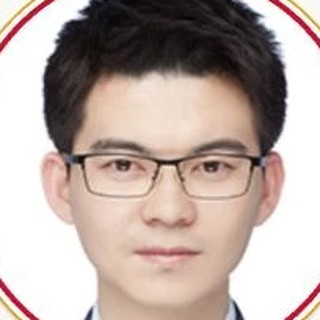
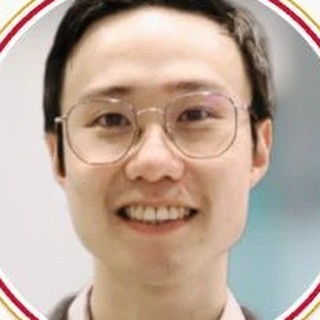

The SSCI Young Investigator Award recognizes outstanding young researchers who have made significant contributions to combustion science and engineering while based in Singapore. Established by the Singapore Section of the Combustion Institute (SSCI), the award aims to encourage excellence, creativity and innovation in combustion research, and to support the next generation of combustion researchers in Singapore.
Nominations for the 2026 award are closed. The call for 2027 nominations will be announced on this page.
2026 Award Recipients

Dr. Peng Ma
Research Fellow
Centre for Hydrogen and Carbon Innovations
National University of Singapore
Ammonia FlamesOptical Diagnostics
Dr. Peng Ma is a Research Fellow at the Centre for Hydrogen and Carbon Innovations, National University of Singapore. His research focuses on low-carbon combustion, particularly ammonia and hydrogen as sustainable fuels. Combining experiments, optical diagnostics, and numerical simulations, he investigates flame stability, combustion characteristics, and emissions in ammonia-fuelled systems, including partially cracked ammonia flames. His work aims to deepen understanding of these fuels and support cleaner, more efficient energy and propulsion technologies. He has co-authored more than 25 research publications, which have collectively received over 400 citations. He also collaborates internationally and shares his findings with the combustion and ammonia-energy communities.
“This recognition means a great deal to me: it encourages me to keep pursuing questions that can advance combustion science and contribute to cleaner energy technologies. It also reminds me that research is a collective effort.”

Dr. Tan Yong Ren
Research Fellow and Project Manager
HYCOMBS Programme (Hydrogen and Ammonia Combustion in Singapore)
Cambridge CARES
Soot FormationAmmonia & Hydrogen Blends
Dr. Tan Yong Ren is a Research Fellow and Project Manager of the HYCOMBS (Hydrogen and Ammonia Combustion in Singapore) programme at Cambridge CARES. He received his PhD in Chemical Engineering from the University of Cambridge (Fitzwilliam College) as a Lee Kuan Yew Scholar. His research examines how fuel structure and blending affect soot formation in laminar flames, turbulent swirl flames and diesel engines, focusing on oxygenated, hydrogen and ammonia-based fuel blends. He developed a new method for measuring soot particle sizes directly in flames and works on digital twins for research laboratories. He has authored 18 peer-reviewed publications. His recent work on soot formation in ammonia–hydrocarbon flames received the Best Paper Award (Fundamental) at the 5th Symposium on Ammonia Energy.
“That simple question about cleaner fuels is still far from answered, and this award encourages me to keep pursuing it together with the community that has supported me.”
Selection Panel (2026 Award)
Yuntao Chen (Co-chair, Ordinary Committee Member of SSCI, American Bureau of Shipping)
Yiguang Ju (Co-chair, Princeton University)
Siew Hwa Chan (Nanyang Technological University Singapore)
Sili Deng (Massachusetts Institute of Technology)
Benedetta Franzelli (CNRS)
Kaoru Maruta (Tohoku University)
About the Award
The award consists of an SGD 500 prize, an official SSCI Young Investigator Award certificate, and formal recognition at the SSCI Annual Combustion Meeting. Up to two awardees may normally be selected each year. The award may also be left vacant if no suitable candidate is identified.
Eligible candidates include PhD students and researchers within three years of receiving their PhD degree who are active SSCI members and conducting research or working at a Singapore-based university, research institute, government agency, or industry organisation. There is no nationality restriction.
For further details on the award, please refer to the governing guidelines below.